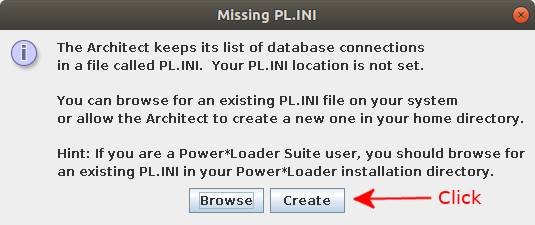
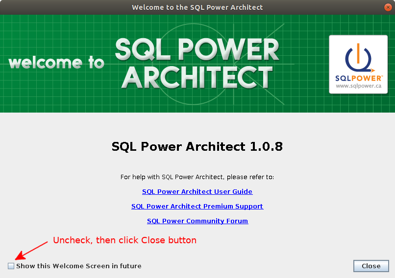
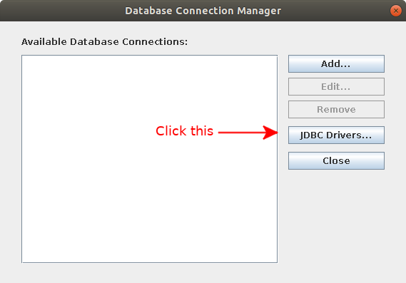
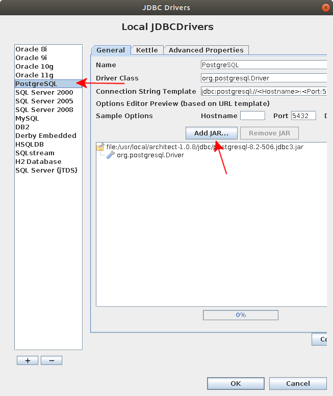
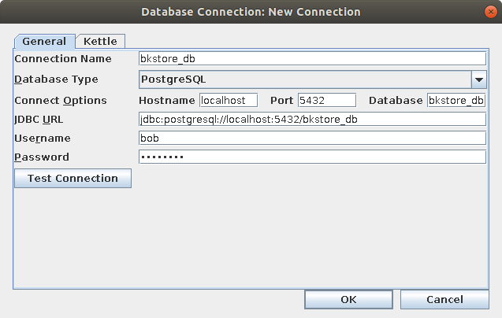
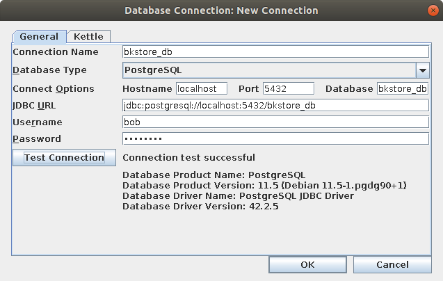
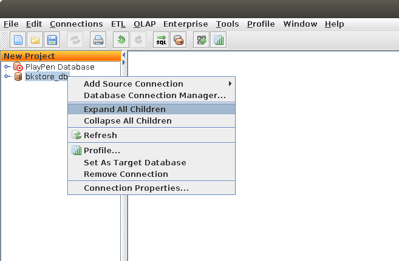
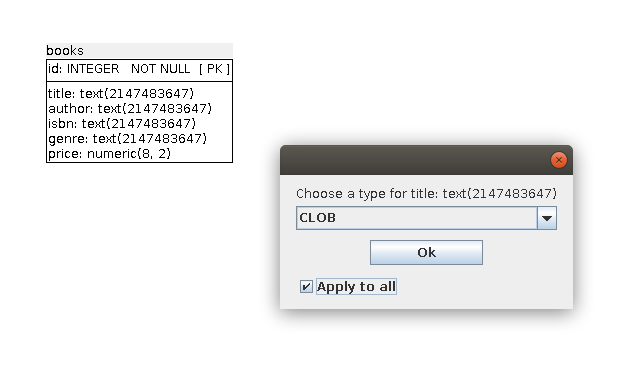
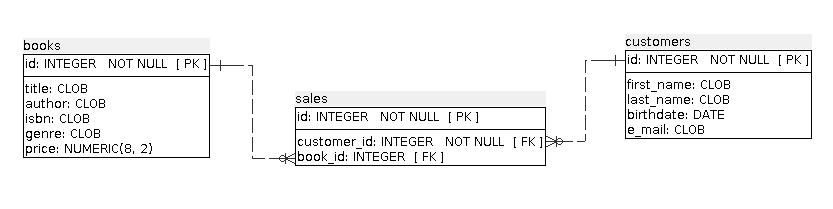
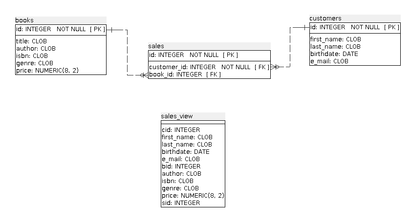

Objective 1.3 - Identifying the steps involved in a physical data model
The physical data model is where the actual database system is selected and the database actually created. The actual database will allow for inserting some data so that a prototype application can be built and shown to the client. Showing an early prototype to the client will allow for the client asking for changes to be made. The need for changes is common, even if you did your best in developing the conceptual data model with the client. The client is probably not a data expert, so until they see an early version of the application in action, they cannot really tell if the application is going to do what she/he wants.
Here is a SQL script called "init.sql" that will be used to implement the actual database:
-- init.sql
drop table if exists customers cascade;
drop table if exists books cascade;
drop table if exists sales cascade;
create table customers(
id serial,
first_name text,
last_name text,
birthdate date,
e_mail text,
primary key (id)
);
create table books(
id serial,
title text,
author text,
isbn text,
genre text,
price decimal(8,2),
primary key (id)
);
create table sales(
id serial,
customer_id integer references customers(id),
book_id integer references books(id),
primary key (id)
);
create view sales_view as
select customers.id as cid, customers.first_name,
customers.last_name, customers.birthdate, customers.e_mail,
books.id as bid, books.author, books.isbn, books.genre,
books.price, sales.id as sid from
customers join sales on customers.id=sales.customer_id
join books on sales.book_id=books.id;Line 1 is just a comment stating the name of this SQL script. Lines 2-4 just drop the tables if the tables exist. These lines allow running "init.sql" again to clear out the contents of the tables and allow the design of those tables to be changed. The optional clause if exists is used so that the first time "init.sql" is run, you don't get an error for trying to drop a table that does not exist.
Lines 6-13 are used to create the customers table. Line 7 creates the id field that will be designated as the primary key field on line 12.
A primary key field is a field that must have a unique value for that table. That is, no two records can have the same value for the primary key field. The use of the serial data type will help to make this an easy requirement to fulfill, because the database will automatically assign the an integer one higher than the last value for that field. Also, if you try to assign a value for a serial type field that already exists in the table, PostgreSQL will prevent the insertion of that record.
Lines 8 and 9 designate the first_name and last_name fields to be of type text . The text data type in PostgreSQL is a string field that has essentially no limit on its size. At the same time, if you only use one character for a text field, you don't waste any space. In other database systems, choosing a string type that is too large wastes storage space and can slow performance for the database.
Notice that the names of the fields
first_name
and
Line 10 sets the birthdate field to a data type of date . When you wish to store data as a date, don't use a string type. Using a string type instead of a date type will prevent you from sorting by this field properly. Also, using a date type will usually result in the database system being able to calculate the number of days between two dates. That is not something that could be done if the dates were stored as some sort of string type.
Line 11 defines the data type for the e_mail field as text. As mentioned earlier, line 12 designates the id field as the primary key field.
Lines 14-22 are used to create the books table. Most of the field types are text The isbn field is a text field because the ISBN number contains more than just digits. Although an ISBN number is tied to a book, a book actually may have more than one ISBN number (for different formats of the book for example). So, it is better to have the id field serve as the primary key field, even if the ISBN should identify at least one version of the book. The price is defined as type decimal(8,2) . That means a decimal with two numbers after the decimal point with a maximum of 8 places.
Lines 23-27 define the sales table. This is the table that joins the customers table to the books table. On line 25 the declaration,
customer_id integer references customers(id)means that a foreign key constraint will be created. This constraint makes it so that the value for sales.customer_id must match an id from the customers table. If you try to store a sales record with a customer_id that does not match an id from the customers table, the foreign key constraint will prevent inserting that record. This makes physical sense, since it does not make sense to store a sales record for a customer that does not exist. Similarly, on line 26, the declaration
book_id integer references books(id)means that the book_id field value must match an id from the books table. Just as with the customer foreign key constraint, the foreign key constraint on books makes sense. There is no point in storing a sales record for a book that does not exist.
Lines 30-36 creates a view called sales_view . As we will discuss later in the course, a view is a way of joining data from multiple tables. Line 35 shows the join being on the condition that the customers.id field matching the sales.customer_id field. This is directly related to the foreign key constraint created by line 25. Line 36 has the sales table joining the books table on the sales.book_id field matching the books.id field. That is directly related to the foreign key constraint created by line 26.
Using SQL Power Architect to create an entity relationship diagram
The Docker container for postgres created using docker-compose has a Java application called SQL Power Architect . This application can connect to a variety of different databases and create an entity relationship diagram . That is just the kind of diagram that we created with the logical data model. To do this, start by doing the following:
$ mkdir ~/Desktop/docker_cent280/docs/physical_model
$ cd ~/Desktop/docker_cent280/docs/physical_modelCreate the file "init.sql" shown above by starting up geany and copying and pasting from the SQL script above:
$ geany init.sqlOnce you have saved that file, quit out of Geany and get the Docker containers associated with docker-compose started:
$ cd ~/Desktop/docker_cent280
$ docker-compose startEnter into the postgres Docker container and create a database called "bkstore_db" that is owned by 'bob':
$ docker-compose exec postgresql bash
# psql -U cent280man -W cent280db
Password:
psql (11.5 (Debian 11.5-1.pgdg90+1))
Type "help" for help.
cent280db=# create database bkstore_db owner bob;
CREATE DATABASE
cent280db=# \qFrom the root prompt run the following commands:
# cd /home/physical_model/
# psql -U bob -W bkstore_db
Password:
psql (11.5 (Debian 11.5-1.pgdg90+1))
Type "help" for help.
bkstore_db=> \i init.sql
DROP TABLE
psql:init.sql:3: NOTICE: table "books" does not exist, skipping
DROP TABLE
psql:init.sql:4: NOTICE: table "sales" does not exist, skipping
DROP TABLE
CREATE TABLE
CREATE TABLE
CREATE TABLE
CREATE VIEWQuit out of the database by typing \q .
Starting up SQL Power Architect
While still in the root prompt, run the following commands:
# cd /usr/local/architect-1.0.8/
# java -jar architect.jarIf you see an error message that says "Can't connect to X11 window server", you need to open another terminal and run the following command:
$ xhost + SI:localuser:rootTo make it so that you don't have to enter this command again, do the following:
$ cd ~
$ geany .bashrcAdd this line to the end of that file:
xhost + SI:localuser:rootSave the file and run the following command:
source ~/.bashrcGo back to your root prompt inside the postgresql Docker container and try starting up SQL Power Architect again. The first time the SQL Power Architect is run, the following dialog box pops up:

Click on the Create button. You will get a welcome screen. Make sure that you turn off the checkbox that says Show this Welcome Screen in the future and click on Close.

Go to Connections => Database Connection Manager. Click on the JDBC Drivers button:

When the next dialog box pops up, select PostgreSQL on the left:

Click on the Add JAR button. When the open file dialog box comes up, navigate to /usr/local/architect-1.0.8/jdbc. Select the file "postgresql-42.25.jar" and click Open . Remove the other jar file "postgresql-8.2-506.jdbc3.jar" by selecting it and clicking on the Remove JAR button. Then, click OK. Then, click Close.
Go to Connections => Add Source Connection => New connection. Set the following values:

That is set the following:
Connection Name:
:bkstore_db
Database Type:
PostgreSQL
Connect Options:
Hostname:
localhost
Port:
5432
Database:
bkstore_db
Username:
bob
Password:
somepass
Then click on the Test Connection button:

Click OK. On the left side, right-click on the bkstore_db item and select Expand All Children :

Drag the books (TABLE) item into the playpen area. When you see a dialog asking for the data type to set for the title, checkk Apply to all and then Ok.

Drag over the sales (TABLE) and the customers (TABLE) . Apply the BLOB type to all the text fields for customers. Note how the relationship lines show up automatically and how they depict one-to-many relationships.

Although we already drew something like this with draw.io , this diagram is more meaningful because it comes directly from the database definitions. Dragging the sales_view (VIEW) into the playpen and making a screen shot like the one shown below makes for a useful diagram when you are designing queries for this database.

The next steps would be to insert some test data into the tables and start building the application that will allow the client to easily interact with the database.